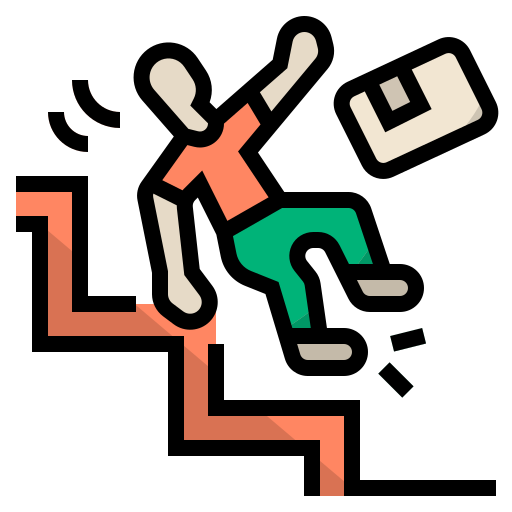

<section class="mt3">
  <div class="parent ">
    <h1 data-aos="flip-left" data-aos-duration="2000">Who Are We</h1>
    <p class="pp" class="pb-5">We are Graduation Team we provide Special service
      for people of any ages
      (young,elder,...) We Built
      this service by many Technologies and we plan to add more new
      Features..</p>
    

    <h1 class="mt-5" data-aos="flip-left" data-aos-duration="1000">What is our
      Mission</h1>

    <p class="pp">We seek to build very useful digital solutions for people and
      community to help them in thier
      life
      , and also to understand and know what is the real problems they are
      suffering from </p>

    <div class="row w-100">
      <div
        data-aos="fade-up" data-aos-duration="2000"
        class="col-md-3  bgc d-flex px-2 mx-2 text-white pb-4 pt-4 justify-content-center align-items-center border rounded-4  flex-column">
        
        <h2>Fall Detection</h2>
        A fall detection project typically involves creating a system that can
        automatically detect when a
        person has fallen down and may need assistance
      </div>

      <div
        data-aos="fade-up" data-aos-duration="1000"
        class="col-md-3  d-flex bgc px-2 mx-2 text-white pb-4  pt-4 justify-content-center align-items-center  border rounded-4 flex-column">
        
        <h2>Emergency Call</h2>

        enhances the safety and well-being of individuals by automatically
        alerting designated contacts in
        the
        event of a fall , facilitating prompt assistance when needed
      </div>

      <div
        data-aos="fade-up" data-aos-duration="1000"
        class="col-md-3  d-flex bgc px-2 pb-4 mx-2 text-white pt-4 justify-content-center align-items-center flex-column border rounded-4 ">
        
        <h2>Health Monitoring</h2>

        Health Monitoring show when elder fallen down, and what history medical
        of patients which is all the
        events happened to him
      </div>
    </div>
    <br><br>
    <h1 class="mt-5" data-aos="flip-left" data-aos-duration="2000">How to use
      it</h1>
    <p class="pp">Download the app and install the device to start using our
      service (as a caregiver) . or use
      the
      Website and
      use Webcam to start using our Service (as a patient).</p>
    <div class="row w-100">
      <div
        data-aos="fade-up" data-aos-duration="1000"
        class="col-md-3  bgc d-flex px-2 mx-2 mb-5  text-white pb-4 pt-4 justify-content-center align-items-center border rounded-4  flex-column">
        
        <h2>Install the device</h2>
        Download the app and install the device to start using our service (as a
        caregiver)
      </div>

      <div
        data-aos="fade-up" data-aos-duration="1000"
        class="col-md-3  d-flex bgc px-2 mx-2 text-white mb-5  pb-4  pt-4 justify-content-center align-items-center  border rounded-4 flex-column">
        
        <h2>Connect to internet</h2>

        connecct to the Internet & Turn on GPS Location
      </div>

      <div
        data-aos="fade-up" data-aos-duration="1000"
        class="col-md-3  d-flex bgc px-2 pb-4 mx-2 text-white pt-4 justify-content-center mb-5 align-items-center flex-column border rounded-4 ">
        
        <h2>Start using</h2>
        Start Using our Service
        <div data-aos="flip-left" data-aos-duration="1000">
          <button class="btn btn-primary mt-2 bg-white text-primary" type>Start
            Using</button>
        </div>
      </div>
    </div>
    <br><br>
    <div class="container">
      <footer
        class="d-flex flex-wrap justify-content-between align-items-center py-3 my-4 border-top">
        <div class="col-md-4 d-flex align-items-center">
          <a href="/"
            class="mb-3 me-2 mb-md-0 text-muted text-decoration-none lh-1">
            <svg class="bi" width="30" height="24"><use
                xlink:href="#bootstrap"></use></svg>
          </a>
          <span class="text-muted">© 2024 Assiut, Graduation Project</span>
        </div>

        <ul class="nav col-md-4 justify-content-end list-unstyled d-flex">
          <li data-aos="fade-right" data-aos-duration="1000" class="ms-3"><a class="text-muted" href="#"><i
                class="fab fa-facebook fa-2x" ></i></a></li>
          <li data-aos="fade-up" data-aos-duration="1000" class="ms-3"><a class="text-muted" href="#"><i
                class="fab fa-twitter fa-2x"></i></a></li>
          <li data-aos="fade-left" data-aos-duration="1000" class="ms-3"><a class="text-muted" href="#"><i
                class="fab fa-instagram fa-2x"></i></a></li>

        </ul>
      </footer>
    </div>

  </div>
</section>
